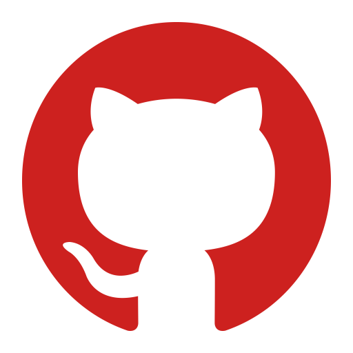

<ion-app>
  <ion-menu side="start" contentId="main-content" type="overlay">
    <ion-header class="ion-padding">
      
    </ion-header>
    <ion-content>
      <ion-list id="inbox-list">
        <ng-container *ngIf="authState$|async as stateAuth;">
          <ion-list-header>{{ stateAuth?.user?.username ? stateAuth?.user?.username : 'Visitante' }}</ion-list-header>
          <ion-note></ion-note>
        </ng-container>


        <ion-menu-toggle auto-hide="false" *ngFor="let p of appPages; let i = index">
          <ion-item (click)="selectedIndex = i" routerDirection="root" [routerLink]="[p.url]" lines="none"
            detail="false" [class.selected]="selectedIndex == i">
            <ion-icon slot="start" [ios]="p.icon + '-outline'" [md]="p.icon + '-sharp'"></ion-icon>
            <ion-label>{{ p.title }}</ion-label>
          </ion-item>
        </ion-menu-toggle>


       
      </ion-list>
    </ion-content>
    <ion-footer>
      <ion-toolbar>
        <ng-container *ngIf="authState$|async as authState">
          <ion-menu-toggle *ngIf="authState?.logged" auto-hide="false">
            <ion-item button (click)="logout()" lines="none" detail="false">
              <ion-icon slot="start" name="log-out-outline"></ion-icon>
              <ion-label>Sair</ion-label>
            </ion-item>
          </ion-menu-toggle>

          <ion-menu-toggle *ngIf="!authState?.logged" auto-hide=" false">
            <ion-item button (click)="presentModalLogin()" lines="none" detail="false">
              <ion-icon slot="start" name="log-in-outline"></ion-icon>
              <ion-label>Entrar</ion-label>
            </ion-item>
          </ion-menu-toggle>

          <ion-menu-toggle *ngIf="!authState?.logged" auto-hide="false">
            <ion-item button (click)="presentModalRegister()" lines="none" detail="false">
              <ion-icon slot="start" ios="person-add-outline"></ion-icon>
              <ion-label>Registrar</ion-label>
            </ion-item>
          </ion-menu-toggle>
        </ng-container>


        
      </ion-toolbar>
      <ion-toolbar>
        <ion-title size="small" >
          Dev: Alison Aguiar
        </ion-title>
        <ion-buttons slot="end">
          <ion-button (click)="openGitHub()">
            
          </ion-button>

          <ion-button (click)="openInstagram()" >
            
          </ion-button>

        </ion-buttons>
      </ion-toolbar>
    </ion-footer>
  </ion-menu>
  <ion-split-pane contentId="main-content">
    <ion-router-outlet id="main-content"></ion-router-outlet>
  </ion-split-pane>
</ion-app>